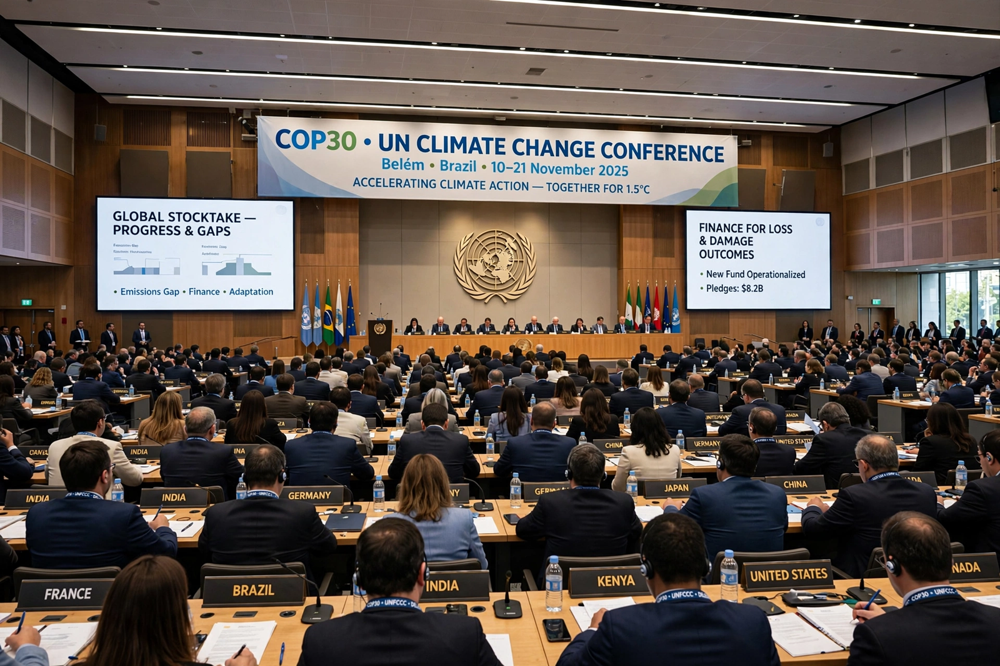

United Nations Framework Convention on Climate Change

The United Nations Framework Convention on Climate Change (UNFCCC) is the foundational international treaty on {L('Climate_change')}, adopted at the {L('Earth_Summit')} in Rio de Janeiro in 1992 and in force since 21 March 1994. Nearly every country in the world is a party.
Its objective is the 'stabilisation of greenhouse gas concentrations in the atmosphere at a level that would prevent dangerous anthropogenic interference with the climate system'. The treaty itself sets no binding emission limits; that work was delegated to its protocols and agreements.
Principles and structure
The Convention divides countries into industrialised 'Annex I' parties, which accepted the (initially non-binding) aim of returning emissions to 1990 levels, and developing countries with no such aim; it enshrines 'common but differentiated responsibilities', acknowledging that rich countries caused most historical emissions and have greater capacity to act.
The Conference of the Parties (COP) meets annually and is the treaty's supreme body; a secretariat based in Bonn, Germany supports the process. COP sessions have become the central arena of global climate diplomacy, drawing tens of thousands of delegates, lobbyists, scientists and activists.
Offspring agreements
The Kyoto Protocol (1997) imposed binding targets on developed countries; the Paris Agreement (2015) universalised participation through voluntary national pledges with a ratchet mechanism and the temperature goals of well below 2 °C and pursuing 1.5 °C. Reporting rules, a global stocktake and climate-finance arrangements (including the Green Climate Fund and, agreed in 2022, a loss and damage fund) all operate under the Convention's umbrella.
See also: Paris Agreement · Kyoto Protocol · Earth Summit · Climate change · IPCC